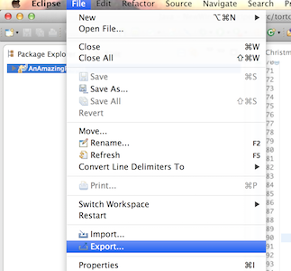
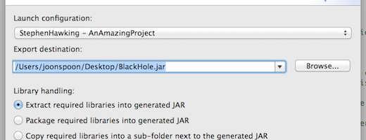
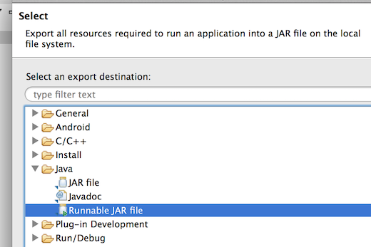

1. Click on the Java Project that contains your program then File > Export.

2. Under Java, select “Runnable JAR File”.

3. Select your program under “Launch configuration” and use “Browse…” to put your JAR on the Desktop.

4. Click “Finish” and “OK” twice.